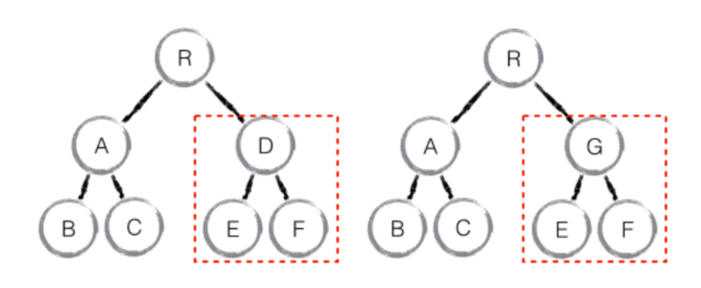
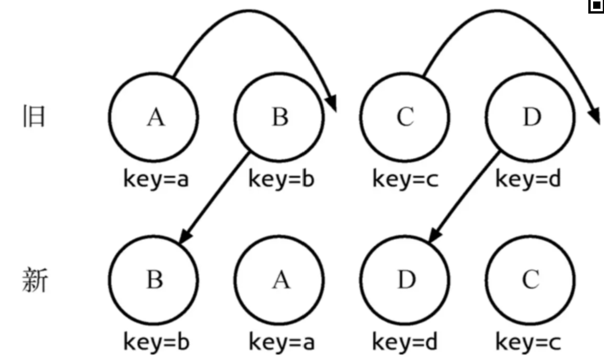
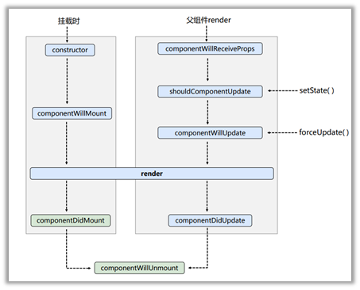
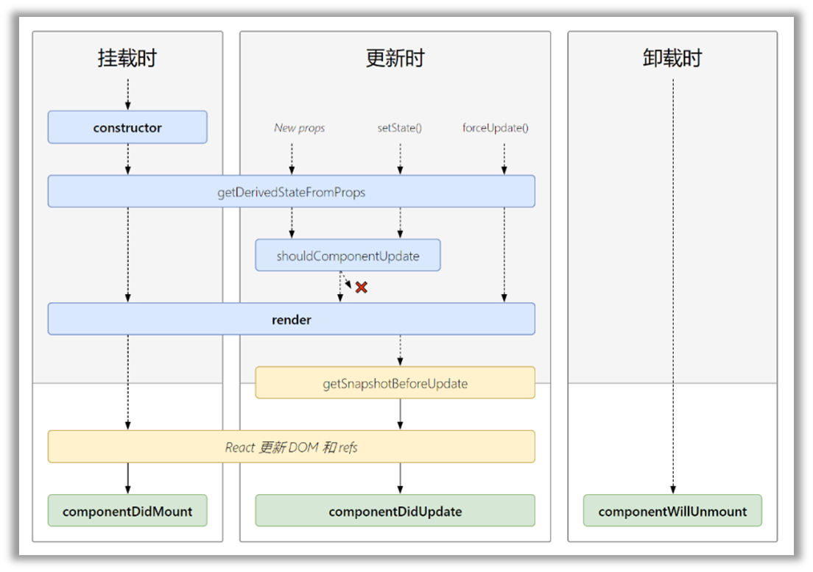
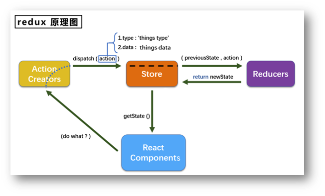

react
函数式编程
- 概念：函数式编程是通过编写纯函数，避免共享状态、可变数据、副作用来构建软件的过程。函数式编程是声明式的编程而不是命令式的。
对react的理解？有哪些特性？
react是什么？
React，用于构建用户界面的 JavaScript 库，只提供了 UI 层面的解决方案。遵循组件设计模式、声明式编程范式和函数式编程概念，以使前端应用程序更高效。使用虚拟 DOM 来有效地操作 DOM，遵循从高阶组件到低阶组件的单向数据流。帮助我们将界面成了各个独立的小块，每一个块就是组件，这些组件之间可以组合、嵌套，构成整体页面。react 类组件使用一个名为 render() 的方法或者函数组件return，接收输入的数据并返回需要展示的内容。
特性
- JSX 语法：在JS中通过使用XML的方式去直接声明界面的DOM结构
- 单向数据绑定
- 虚拟 DOM
- 声明式编程。声明式编程是一种编程范式，它关注的是你要做什么，而不是如何做。它表达逻辑而不显式地定义步骤。这意味着我们需要根据逻辑的计算来声明要显示的组件。
- 组件。组件的特点：可组合（每个组件易于和其它组件一起使用，或者嵌套在另一个组件内部）、可重用（每个组件都是具有独立功能的，它可以被使用在多个 UI 场景）、可维护（每个小的组件仅仅包含自身的逻辑，更容易被理解和维护）
组件的优点
- 降低整个系统的耦合度，在保持接口不变的情况下，我们可以替换不同的组件快速完成需求，例如输入框，可以替换为日历、时间、范围等组件作具体的实现
- 调试方便，由于整个系统是通过组件组合起来的，在出现问题的时候，可以用排除法直接移除组件，或者根据报错的组件快速定位问题，之所以能够快速定位，是因为每个组件之间低耦合，职责单一，所以逻辑会比分析整个系统要简单
- 提高可维护性，由于每个组件的职责单一，并且组件在系统中是被复用的，所以对代码进行优化可获得系统的整体升级
类组件与函数组件
类组件
通过使用
ES6类的编写形式去编写组件，该类必须继承React.Component如果想要访问父组件传递过来的参数，可通过
this.props的方式去访问在组件中必须实现
render方法，在return中返回React对象
函数组件
- 通过函数编写的形式去实现一个
React组件，函数第一个参数为props用于接收父组件传递过来的参数
类组件与函数组件的区别
- 编写形式
- 状态管理：类组件调用setState就能进行数据状态管理，而函数组件需要使用hooks进行状态管理
- 生命周期：函数组件中不存在生命周期，但某些钩子可以替代生命周期的作用。例如useEffect钩子中能完成componentDidMount生命周期的功能，return时，能完成componentWillUnmount生命周期的功能。
- 调用方式：react内部调用函数组件即是执行函数，而react内部调用类组件需要将组件进行实例化，再调用实例对象的render方法。
- this：类组件中this总是可变的，会产生某些与this指向相关的问题。
真实DOM和虚拟DOM
是什么？
真实DOM是文档对象模型，在页面渲染出的每一个节点都是一个真实DOM结构。
虚拟DOM本质是以JS对象形式存在的对DOM的描述。创建虚拟DOM目的是为了更好将虚拟的节点渲染到页面视图中，虚拟DOM对象的节点与真实DOM的属性一一对应。
区别
- 虚拟 DOM 减少了页面的排版与重绘操作，而真实 DOM 会频繁重排与重绘
- 虚拟 DOM 的总损耗是“虚拟 DOM 增删改+真实 DOM 差异增删改+排版与重绘”，真实 DOM 的总损耗是“真实 DOM 完全增删改+排版与重绘”
优缺点
真实DOM优点：
- 易用
真实DOM缺点：
- 效率低，解析速度慢，内存占用量过高
- 性能差：频繁操作真实 DOM，易于导致重绘与回流
虚拟DOM优点：
- 简单方便：如果使用手动操作真实
DOM来完成页面，繁琐又容易出错，在大规模应用下维护起来也很困难 - 性能方面：使用 Virtual DOM，能够有效避免真实 DOM 树频繁更新，减少多次更新而引起重绘与回流，提高性能
- 跨平台：React 借助虚拟 DOM，带来了跨平台的能力，一套代码多端运行
虚拟DOM缺点：
- 在一些性能要求极高的应用中虚拟 DOM 无法进行针对性的极致优化
- 首次渲染大量 DOM 时，由于多了一层虚拟 DOM 的计算，速度比正常稍慢
react diff
是什么？
diff算法通过对比新旧Virtual DOM来找出真正的Dom变化之处。传统diff算法通过循环递归对节点进行依次对比，效率低下，算法复杂度达到 O(n^3)，react将算法进行一个优化，时间复杂度为O(n)
原理
遵循三个层级的策略：
- tree层级
- conponent 层级
- element 层级
tree层级
虚拟节点中，对DOM相同层级的节点进行比较。这部分只涉及删除、创建操作。
component层级
同一类的组件，则会继续往下diff运算，如果不是同一类的组件，那么直接删除这个组件下的所有子节点，创建新的。这部分只涉及删除、创建操作。

element层级
对于比较同一层级的节点，每个节点在对应的层级用唯一的key作为标识，提供了插入、删除和移动。

通过key可以准确地发现新旧集合中的节点都是相同的节点，因此无需进行节点删除和创建，只需要将旧集合中节点的位置进行移动，更新为新集合中节点的位置。
key的作用
key是虚拟DOM对象的标识，判断元素是新创建的还是被移动的元素，从而减少不必要的元素渲染。当状态中的数据发生变化时，react会根据【新数据】生成【新的虚拟DOM】，随后react进行【新虚拟DOM】与【旧虚拟DOM】的diffing比较，比较原则如下：
**a.**旧虚拟DOM中找到了与新虚拟DOM相同的key:
1. 若虚拟DOM中内容没变，直接使用之前的真实DOM
2. 若虚拟DOM中内容变了，则生成新的真实DOM，随后替换页面中之前的真实DOM
b. 旧虚拟DOM中未找到与新虚拟DOM相同的key
1. 根据数据创建新的真实DOM，随后渲染到页面
使用index作为key可能引发的问题
若对数据进行：逆序添加、逆序删除等破坏顺序操作：会产生没有必要的真实DOM更新==》界面效果没问题，但效率低
若结构中还包含输入类DOM(input\radio): 会产生错误DOM更新==》界面有问题
注意！如果不存在对数据的逆序添加、逆序删除等破坏顺序操作，仅用于渲染列表用于展示，使用Index作为key是没有问题的。
如何选择key
- 最好使用每条数据的唯一标识作为key,比如id\手机号等
- 如果只是简单的数据展示，用index也可以
JSX转成真实DOM的过程
是什么？
react通过将组件编写的JSX映射到屏幕，以及组件中的状态发生了变化之后 React会将这些「变化」更新到屏幕上。JSX通过babel最终转化成React.createElement这种形式。
在转化过程中，babel在编译时会判断 JSX 中组件的首字母：
- 当首字母为小写时，其被认定为原生
DOM标签，createElement的第一个变量被编译为字符串 - 当首字母为大写时，其被认定为自定义组件，createElement 的第一个变量被编译为对象
最终都会通过RenderDOM.render(...)方法进行挂载
过程
在react中，节点大致可以分成四个类别：
- 原生标签节点
- 文本节点
- 函数组件
- 类组件
这些类别最终都会被转化成React.createElement这种形式。
React.createElement其被调用时会传入标签类型type，标签属性props及若干子元素children，作用是生成一个虚拟Dom对象。
1 | <div> |
1 | function createElement(type, config, ...children) { |
createElement会根据传入的节点信息进行一个判断：
- 如果是原生标签节点， type 是字符串，如div、span
- 如果是文本节点， type就没有，这里是 TEXT
- 如果是函数组件，type 是函数名
- 如果是类组件，type 是类名
虚拟DOM会通过ReactDOM.render进行渲染成真实DOM，使用方法如下：
1 | ReactDOM.render(element, container[, callback]) |
当首次调用时，容器节点里的所有 DOM 元素都会被替换，后续的调用则会使用 React 的 diff算法进行高效的更新。
如果提供了可选的回调函数callback，该回调将在组件被渲染或更新之后被执行。
ReactDOM.render方法大致实现过程：
1 | function render(vnode, container) { |
流程总结
- 使用React.createElement或JSX编写React组件，实际上所有的 JSX 代码最后都会转换成React.createElement(…) ，Babel帮助我们完成了这个转换的过程。
- createElement函数对key和ref等特殊的props进行处理，并获取defaultProps对默认props进行赋值，并且对传入的孩子节点进行处理，最终构造成一个虚拟DOM对象
- ReactDOM.render将生成好的虚拟DOM渲染到指定容器上，其中采用了批处理、事务等机制并且对特定浏览器进行了性能优化，最终转换为真实DOM
react生命周期
旧生命周期流程

- 初始化阶段：由ReactDOM.render()触发—初次渲染
- constructor()
- componentWillMount()
- render()
- componentDidMount()
- 更新阶段：由组件内部this.setState()或由父组件重新render触发
- shouldComponentUpdate()
- componentWillUpdate()
- render()
- componentDidUpdate()
- 卸载阶段：由React.unmountComponentAtNode()触发
- componentWillUnmount()
新生命周期流程

- 初始化阶段：由ReactDOM.render()触发—初次渲染
- constructor()：在方法内部通过
super关键字获取来自父组件的props。在该方法中，通常的操作为初始化state状态或者在this上挂载方法。 - getDerivedStateFromProps()：静态方法，不能访问到组件的实例。第一个参数为即将更新的
props，第二个参数为上一个状态的state，可以比较props和state来加一些限制条件，防止无用的state更新。该方法需要返回一个新的对象作为新的state或者返回null表示state状态不需要更新。 - render()
- componentDidMount()
- 更新阶段：由组件内部this.setState()或由父组件重新render触发
- getDerivedStateFromProps()
- shouldComponentUpdate()：用于告知组件本身基于当前的
props和state是否需要重新渲染组件，默认情况返回true。 - render()
- getSnapshotBeforeUpdate()：此方法的目的在于获取组件更新前的一些信息，比如组件的滚动位置之类的，在组件更新后可以根据这些信息恢复一些UI视觉上的状态。
- componentDidUpdate()
- 卸载阶段：由React.unmountComponentAtNode()触发
- componentWillUnmount()
即将废弃的生命周期函数
- componentWillMount
- componentWillReceiveProps
- componentWillUpdate
现在使用会出现警告，下一个大版本需要加上UNSAFE_前缀才能使用，以后可能会被彻底废弃，不建议使用。
state和props
state
一个组件的显示形态可以由数据状态和外部参数所决定，而数据状态就是 state，一般在 constructor 中初始化。当需要修改里面的值的状态需要通过调用 setState 来改变，从而达到更新组件内部数据的作用，并且重新调用组件 render 方法。
props
props 是外部传入组件内部的数据。react 具有单向数据流的特性，所以他的主要作用是从父组件向子组件中传递数据。
区别
相同点：
- 两者都是 JavaScript 对象
- 两者都是用于保存信息
- props 和 state 都能触发渲染更新
区别：
- props 是外部传递给组件的，而 state 是在组件内被组件自己管理的，一般在 constructor 中初始化
- props 在组件内部是不可修改的，但 state 在组件内部可以进行修改
- state 是多变的、可以修改
super()与super(props)
ES6类
super 关键字实现调用父类，super 代替的是父类的构建函数，使用 super(name) 相当于调用 father.prototype.constructor.call(this,name)
如果在子类中不使用 super关键字，则会引发报错。报错的原因是子类是没有自己的 this 对象的，它只能继承父类的 this 对象，然后对其进行加工。而 super() 就是将父类中的 this 对象继承给子类的，没有 super() 子类就得不到 this 对象。如果先调用 this，再初始化 super()，同样是禁止的行为。
super()与super(props)的区别
在 React 中，类组件基于 ES6，所以在 constructor 中必须使用 super。在调用 super 过程，无论是否传入 props，React 内部都会将 porps 赋值给组件实例 porps 属性中。如果只调用了 super()，那么 this.props 在 super() 和构造函数结束之间仍是 undefined。
setState
是什么？
更改数据状态state里面的值需要通过调用setState来改变
写法
- 对象式
- setState(stateChange, [callback])
- stateChange为状态改变对象；callback是可选的回调函数，在状态更新完毕、界面也更新后才被调用
1 | this.setState({count:count + 1}) |
- 函数式
- setState(updater, [callback])
- updater为函数，可以接收state和props
1 | this.setState((state,props) => { |
更新类型
setState是一个同步的方法，但是setState引起react后续更新状态的动作是异步的
异步更新：在组件生命周期或React合成事件中
同步更新：在setTimeout或者原生dom事件中
1 | // 异步更新 |
1 | // 同步更新 |
批量更新
1 | handleClick = () => { |
对同一个值进行多次 setState， setState 的批量更新策略会对其进行覆盖，取最后一次的执行结果。
如果是下一个state依赖前一个state的话，推荐给setState一个参数传入一个function，如下：
1 | onClick = () => { |
react事件机制
是什么？
React基于浏览器的事件机制自身实现了一套事件机制，包括事件注册、事件的合成、事件冒泡、事件派发等。在React中这套事件机制被称之为合成事件。
合成事件
合成事件是 React模拟原生 DOM事件所有能力的一个事件对象，即浏览器原生事件的跨浏览器包装器。根据 W3C规范来定义合成事件，兼容所有浏览器，拥有与浏览器原生事件相同的接口。
react事件与原生事件非常相似，但也存在区别：
- 事件名称命名方式不同
1 | // 原生事件绑定方式：小写 |
- 事件处理函数书写不同
1 | // 原生事件 事件处理函数写法：带括号 |
虽然onClick看似绑定到DOM元素上，但实际并不会把事件代理函数直接绑定到真实的节点上，而是把所有的事件绑定到结构的最外层，使用一个统一的事件去监听。
这个事件监听器上维持了一个映射来保存所有组件内部的事件监听和处理函数。当组件挂载或卸载时，只是在这个统一的事件监听器上插入或删除一些对象。
当事件发生时，首先被这个统一的事件监听器处理，然后在映射里找到真正的事件处理函数并调用。这样做简化了事件处理和回收机制，效率也有很大提升。
合成事件与原生事件的执行顺序
1 | import React from 'react'; |
输出顺序为：原生事件–>合成事件–>document挂载事件
1 | 原生事件：子元素 DOM 事件监听！ |
可以得出以下结论：
- React 所有事件都挂载在 document 对象上
- 当真实 DOM 元素触发事件，会冒泡到 document 对象后，再处理 React 事件
- 所以会先执行原生事件，然后处理 React 事件
- 最后真正执行 document 上挂载的事件
- React 自身实现了一套事件冒泡机制，想要阻止不同时间段的冒泡行为，对应使用不同的方法
类组件中事件绑定方式
render函数是被组件实例调用的,其中的this指向的就是当前的组件实例,但是如果赋值给点击事件了,this则改变了指向,由react内部直接调用onClick,此时的this则是undefined (class内部开启局部的严格模式this不指向window)
常见的绑定方式
- render方法中使用bind
- render方法中使用箭头函数
- constructor中bind
- 定义阶段使用箭头函数绑定
render方法中使用bind
1 | render() { |
render方法中使用箭头函数
1 | render() { |
constructor中bind
1 | class App extends React.Component { |
函数定义阶段使用箭头函数绑定
1 | class App extends React.Component { |
react中组件的通信方式
分为：
父组件向子组件传递：props
子组件向父组件传递：父组件向子组件传一个函数，然后通过这个函数的回调，拿到子组件传过来的值
兄弟组件之间的通信：父组件作为中间层来实现数据的互通，通过使用父组件传递
父组件向后代组件传递：使用
context。1
2
3
4
5
6
7
8
9
10
11
12
13
14
15
16
17
18
19
20
21
22//父组件
const PriceContext = React.createContext('price')
//使用Provider创建数据源，通过value属性给后代组件传递数据
<PriceContext.Provider value={100}></PriceContext.Provider>
//子组件
//后代组件可以通过Consumer或者使用contextType属性接收数据
//contextType
class MyClass extends React.Component {
static contextType = PriceContext;
render() {
let price = this.context;
/* 基于这个值进行渲染工作 */
}
}
//Consumer
<PriceContext.Consumer>
{ /*这里是一个函数*/ }
{
price => <div>price：{price}</div>
}
</PriceContext.Consumer>非关系组件传递：使用
redux
refs
是什么？
refs允许我们访问 DOM节点或在 render方法中创建的 React元素。如果是渲染组件则返回的是组件实例，如果渲染dom则返回的是具体的dom节点。不能在函数组件上使用ref属性，因为他们并没有实例。
一般函数式组件都是用React.forwardRef包装一下然后返回出去的, 函数式组件本来就是一个render函数，不过在被React.forwardRef包装后就多了一个ref属性了。
使用方式
传入字符串，使用时通过 this.refs.传入的字符串的格式获取对应的元素
1
2
3
4
5
6
7
8
9constructor(props) {
super(props);
this.myRef = React.createRef();
}
render() {
return <div ref="myref" />;
}
//访问
this.refs.myref.innerHTML = "hello";传入对象，对象是通过 React.createRef() 方式创建出来，使用时获取到创建的对象中存在 current 属性就是对应的元素
1
2
3
4
5
6
7
8
9constructor(props) {
super(props);
this.myRef = React.createRef();
}
render() {
return <div ref={this.myRef} />;
}
//访问
const node = this.myRef.current;传入函数，该函数会在 DOM 被挂载时进行回调，这个函数会传入一个 元素对象，可以自己保存，使用时，直接拿到之前保存的元素对象即可
1
2
3
4
5
6
7
8
9constructor(props) {
super(props);
this.myRef = React.createRef();
}
render() {
return <div ref={element => this.myref = element} />;
}
//访问
const node = this.myref传入hook，hook是通过 useRef() 方式创建，使用时通过生成hook对象的 current 属性就是对应的元素
1 | const myref = useRef() |
refs应用场景
- 对Dom元素的焦点控制、内容选择、控制
- 对Dom元素的内容设置及媒体播放
- 对Dom元素的操作和对组件实例的操作
- 集成第三方 DOM 库
受控组件与非受控组件
受控组件
受我们控制的组件，组件的状态全程响应外部数据。受控组件我们一般需要初始状态和一个状态更新事件函数。
非受控组件
不受我们控制的组件。一般情况是在初始化的时候接受外部数据，然后自己在内部存储其自身状态。当需要时，可以使用ref 查询 DOM并查找其当前值。
应用场景
大部分时候推荐使用受控组件来实现表单，因为在受控组件中，表单数据由React组件负责处理。如果选择非受控组件的话，控制能力较弱，表单数据就由DOM本身处理，但更加方便快捷，代码量少。
高阶组件
是什么？
接受一个或多个组件作为参数并且返回一个组件。本质上是一个装饰者设计模式。
编写
1 | import React, { Component } from 'react'; |
把通用的逻辑放在高阶组件中，对组件实现一致的处理，从而实现代码的复用。所以，高阶组件的主要功能是封装并分离组件的通用逻辑，让通用逻辑在组件间更好地被复用。
如果向一个高阶组件添加ref引用，那么ref 指向的是最外层容器组件实例的，而不是被包裹的组件，如果需要传递refs的话，则使用React.forwardRef。
应用场景
高阶组件能够提高代码的复用性和灵活性，在实际应用中，常常用于与核心业务无关但又在多个模块使用的功能，如权限控制、日志记录、数据校验、异常处理、统计上报等。
如下实例，存在一个组件，需要从缓存中获取数据，然后渲染。
1 | //不使用高阶组件 |
1 | // 使用高阶组件 |
react hooks
是什么？
可以在不编写 class 的情况下使用 state 以及其他的 React 特性。使用hooks重点解决的是状态相关的重用问题。
使用hooks的原因
- 难以重用和共享组件中的与状态相关的逻辑
- 逻辑复杂的组件难以开发与维护，当我们的组件需要处理多个互不相关的 local state 时，每个生命周期函数中可能会包含着各种互不相关的逻辑在里面
- 类组件中的this增加学习成本，类组件在基于现有工具的优化上存在些许问题
- 由于业务变动，函数组件不得不改为类组件等等
常用hooks
useState：在函数组件中通过
useState实现函数内部维护state，参数为state默认的值，返回值是一个数组，第一个值为当前的state，第二个值为更新state的函数。useEffect：可以在函数组件中进行一些带有副作用的操作。
useEffect第一个参数接受一个回调函数，默认情况下，useEffect会在第一次渲染和更新之后都会执行，相当于在componentDidMount和componentDidUpdate两个生命周期函数中执行回调。如果某些特定值在两次重渲染之间没有发生变化，你可以跳过对 effect 的调用，这时候只需要传入第二个参数。回调函数中可以返回一个清除函数，这是effect可选的清除机制，相当于类组件中componentwillUnmount生命周期函数。**useEffect相当于componentDidMount，componentDidUpdate和componentWillUnmount这三个生命周期函数的组合**。useContext：父组件与后代组件通信
useRef：获取DOM结构
useEffect第二个参数的执行规则
- 不传参数：每次 render 后都执行
- 空数组：传入第二个参数，每次 render 后比较数组的值没变化，不会在执行，等同于类组件中的 componentDidMount。故只会在第一次render的执行一次。
- 一个值的数组：比较该值有变化就执行
- 多个值的数组：会比较每一个值，有一个不相等就执行
react中引入CSS的方式
- 在组件内直接使用
- 组件中引入 .css 文件
- 组件中引入 .module.css 文件
- CSS in JS
在组件中直接使用
1 | import React, { Component } from "react"; |
优点：
- 内联样式, 样式之间不会有冲突
- 可以动态获取当前state中的状态
缺点：
- 写法上都需要使用驼峰标识
- 某些样式没有提示
- 大量的样式, 代码混乱
- 某些样式无法编写(比如伪类/伪元素)
组件中引入CSS文件
App.css
1 | .title { |
组件中引入
1 | import React, { PureComponent } from 'react'; |
缺点：
- 样式是全局生效，样式之间会互相影响
组件中引入.module.css文件
将css文件作为一个模块引入，这个模块中的所有css，只作用于当前组件，不会影响当前组件的后代组件。
1 | import React, { PureComponent } from 'react'; |
缺点：
- 引用的类名，不能使用连接符(.xxx-xx)，在 JavaScript 中是不识别的
- 所有的 className 都必须使用 {style.className} 的形式来编写
- 不方便动态来修改某些样式，依然需要使用内联样式的方式；
CSS in JS
CSS-in-JS， 是指一种模式，其中CSS由 JavaScript生成而不是在外部文件中定义。此功能并不是 React 的一部分，而是由第三方库提供，例如：
- styled-components
- emotion
- glamorous
styled-components基本使用
本质是通过函数的调用，最终创建出一个组件：
- 这个组件会被自动添加上一个不重复的class
- styled-components会给该class添加相关的样式
基本使用如下：
创建一个style.js文件用于存放样式组件：
1 | export const SelfLink = styled.div` |
引入
1 | import React, { Component } from "react"; |
react组件间过渡动画
是什么？
当一个组件在显示与消失过程中存在过渡动画，可以很好的增加用户的体验。在react中实现过渡动画效果会有很多种选择，如react-transition-group，react-motion，Animated，以及原生的CSS都能完成切换动画。
如何实现？
在react中，react-transition-group是一种很好的解决方案，其为元素添加enter，enter-active，exit，exit-active这一系列勾子。可以帮助我们方便的实现组件的入场和离场动画。
其主要提供了三个主要的组件：
- CSSTransition：在前端开发中，结合 CSS 来完成过渡动画效果
- SwitchTransition：两个组件显示和隐藏切换时，使用该组件
- TransitionGroup：将多个动画组件包裹在其中，一般用于列表中元素的动画
Redux工作原理
是什么？
将所有状态进行集中管理，当需要更新状态的时候，只需要对这个管理集中处理，而不用去关心状态是如何分发到每一个组件内部的。
redux遵循的原则：
- 单一数据源
- state 是只读的
- 使用纯函数来执行修改
redux工作流程

View在redux中会派发action方法；action通过store的dispatch方法会派发给store；store接收action，连同之前的state，一起传递给reducer；reducer返回新的数据给store；store去改变自己的state。
代码
创建store
1 | import { createStore } from 'redux' // 引入一个第三方的方法 |
创建reducer，reduecer本质就是一个函数，接收两个参数state，action，返回state
1 | const initialState = { |
通过store.getState()可以来获取当前state
纯函数
一类特别的函数：只要是同样的输入，必定得到同样的输出
需要遵守的约束
- 不得改写参数数据
- 不会产生任何副作用，例如网络请求，输入和输出设备
- 不能调用Date.now()或Math.random()等不纯的方法
redux的reducer必须是一个纯函数
redux中间件
是什么？
中间件（Middleware）是介于应用系统和系统软件之间的一类软件，它使用系统软件所提供的基础服务（功能），衔接网络上应用系统的各个部分或不同的应用，能够达到资源共享、功能共享的目的。redux是JS库而不是react组件库。
Redux整个工作流程，当action发出之后，reducer立即算出state，整个过程是一个同步的操作。如果需要支持异步操作，或者支持错误处理、日志监控，这个过程就可以用上中间件。Redux中，中间件就是放在就是在dispatch过程，在分发action进行拦截处理。
中间件本质上是一个函数，对store.dispatch方法进行了改造，在发出 Action和执行 Reducer这两步之间，添加了其他功能。
常见的中间件
中间件需要通过applyMiddlewares进行注册，作用是将所有的中间件组成一个数组，依次执行，然后作为第二个参数传入到createStore中。
1 | const store = createStore( |
常用中间件：
- redux-thunk：用于异步操作
- redux-logger：用于日志记录
redux-chunk
异步处理中间件
redux-chunk源码
1 | function createThunkMiddleware(extraArgument) { |
翻译成ES5的写法
1 | function createThunkMiddleware(extraArgument) { |
redux-thunk最重要的思想，就是可以接受一个返回函数的action creator。如果这个action creator 返回的是一个函数，就执行它，如果不是，就按照原来的next(action)执行。
正因为这个action creator可以返回一个函数，那么就可以在这个函数中执行一些异步的操作。例如：
1 | export function addCount() { |
addCountAsync这个action creator就返回了一个函数，将dispatch作为函数的第一个参数传递进去，在函数内进行异步操作就可以了。
redux-logger
实现日志记录
在react项目中使用redux
react-redux
react-redux将组件分成：
- 容器组件：存在逻辑处理
- UI 组件：只负责现显示和交互，内部不处理逻辑，状态由外部控制
使用
react-redux两大核心：
- Provider
- connection
Provider
在redux中存在一个store用于存储state，如果将这个store存放在顶层元素中，其他组件都被包裹在顶层元素之上。那么所有的组件都能够受到redux的控制，都能够获取到redux中的数据。
1 | <Provider store = {store}> |
connection
connect方法将store上的getState和 dispatch包装成组件的props
1 | //导入 |
mapStateToProps
把redux中的数据映射到react中的props中去
1 | //用法 |
mapDispatchToProps
将redux中分发action的函数映射到组件内部的props中
1 | //用法 |
项目结构
按角色组织(MVC)
角色如下：
- reducers
- actions
- components
- containers
按功能组织
使用redux使用功能组织项目，也就是把完成同一应用功能的代码放在一个目录下，一个应用功能包含多个角色的代码